Nguyên tắc tính toán thanh khoản hợp đồng.
Quy trình thực hiện thanh khoản hợp đồng trên phần mềm ECUS5_VNACCS bao gồm 3 bước:
- Bước 1: Kiểm tra số liệu trước khi thực hiện thanh khoản
Để chạy thanh khoản 1 hợp đồng gia công trên phần mềm, bạn vào menu “Loại hình" chọn chức năng “Thanh khoản Hợp đồng gia công theo TT13 (V5)”:
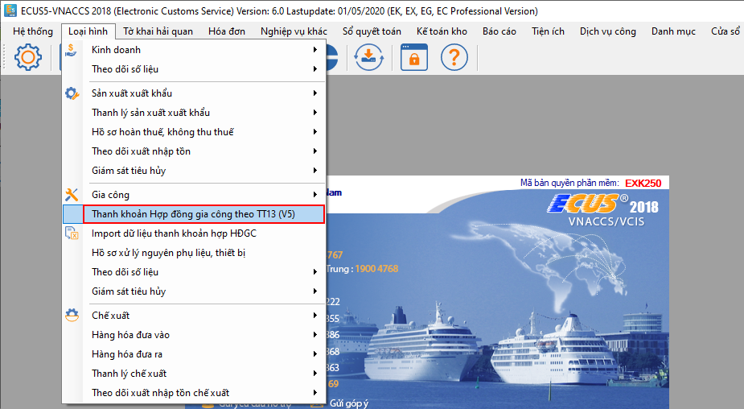
Phần mềm sẽ hiện ra danh sách tất cả những hợp đồng gia công, bạn kich chuột chọn đến hợp đồng cần thanh khoản và bấm “Chọn”:
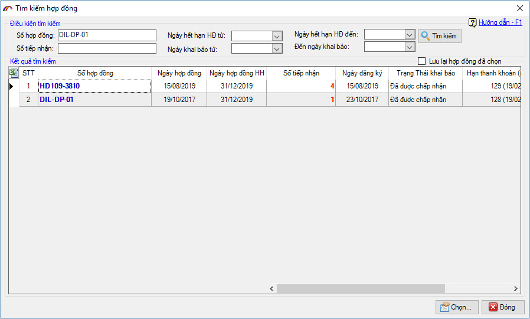
Sau khi chọn hợp đồng cần thanh khoản, phần mềm sẽ hiện ra màn hình lần thanh khoản của hợp đồng như sau:
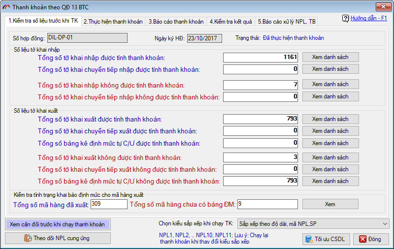
Tại đây, phần mềm sắp xếp các bước để hoàn thành 1 lần thanh khoản hợp đồng theo tuần tự, và từng bước được đưa vào các tab thông tin giúp cho người dùng có thể thực hiện được dễ dàng:
Đầu tiên, bạn kiểm tra lại số liệu của hợp đồng trước khi chạy thanh khoản, bao gồm:
Số liệu tờ khai nhập: Là thống kê danh sách tờ khai nhập của hợp đồng gia công, trong đó:
Tổng số tờ khai nhập được tính thanh khoản: Là danh sách các tờ khai nhập khẩu thuộc hợp đồng gia công bạn đang cần thanh khoản.
Tổng số tờ khai chuyển tiếp nhập được tính thanh khoản: Là danh sách các tờ khai nhập chuyển tiếp nguyên vật liệu từ hợp đồng khác sang hợp đồng bạn đang cần thanh khoản.
Tổng số tờ khai nhập, tổng số tờ khai chuyển tiếp nhập không được tính thanh khoản: Là danh sách các tờ khai nhập, tờ khai nhập chuyển tiếp thuộc hợp đồng nhưng không được tính vào thanh khoản, do trạng thái của tờ khai chưa được khai báo chính thức, hoặc tờ khai đang ở trạng thái hủy.
Số liệu tờ khai xuất: Thống kê các thông tin liên quan đến danh sách tờ khai xuất của hợp đồng gia công, trong đó:
Tổng số tờ khai xuất được tính thanh khoản: Danh sách tờ khai xuất khẩu sản phẩm của hợp đồng.
Tổng số tờ khai xuất chuyển tiếp được tính thanh khoản: Tờ khai xuất chuyển giao nguyên vật liệu từ hợp đồng này sang hợp đồng khác.
Tổng số bảng kê định mức C/Ư được tính thanh khoản: Bảng kê nguyên phụ liệu cung ứng khi bạn mở tờ khai xuất khẩu:
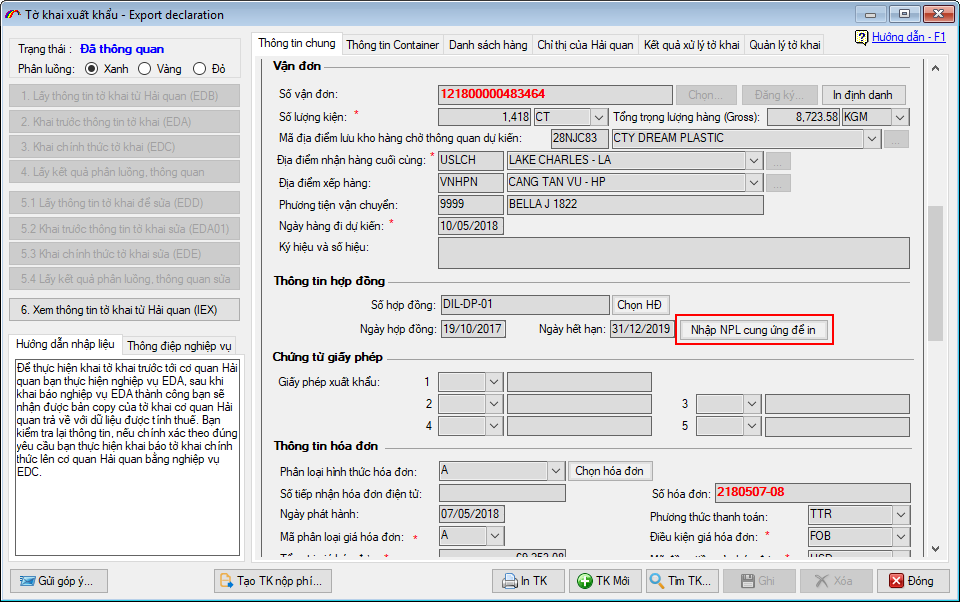
Tổng số tờ khai xuất, tổng số tờ khai chuyển tiếp xuất không được tính thanh khoản: Là danh sách các tờ khai xuất, tờ khai xuất chuyển tiếp thuộc hợp đồng nhưng không được tính vào thanh khoản, do trạng thái của tờ khai chưa được khai báo chính thức, hoặc tờ khai đang ở trạng thái hủy.
Tổng số bảng kê định mức C/Ư không được tính thanh khoản: Danh sách tờ khai xuất không nhập bảng kê nguyên phụ liệu cung ứng khi mở tờ khai.
Kiểm tra tình trạng định mức cho mã hàng xuất: Cung cấp các thông tin về định mức của sản phẩm tham gia trong danh sách tờ khai xuất, trong đó:
Tổng số mã hàng đã xuất: Tổng số sản phẩm xuất khẩu tham gia trong danh sách tờ khai xuất được tính vào thanh khoản.
Tổng số mã hàng chưa có định mức: Danh sách các sản phẩm tham gia vào tờ khai xuất được tính vào thanh khoản, nhưng chưa được xây dựng định mức.
Ngoài ra phần mềm còn cung cấp 1 số các chức năng tiện ích theo dõi trước khi chạy thanh khoản như “Xem cân đối trước khi chạy thanh khoản”, “Theo dõi nguyên phụ liệu cung ứng”… Tùy thuộc vào nhu cầu quản lý, bạn sử dụng các chức năng cho phù hợp.
- Bước 2: Chạy thanh khoản
Sau khi kiểm tra số liệu trước khi chạy thanh khoản, bạn vào tab “2.Thực hiện thanh khoản” và bấm “Thực hiện thanh khoản” để phần mềm tiến hành chạy thanh khoản hợp đồng gia công:
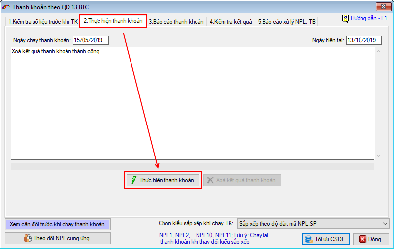
Phần mềm sẽ tiến hành chạy thanh khoản hợp đồng gia công, thời gian chạy thanh khoản sẽ phụ thuộc vào lượng dữ liệu của Doanh nghiệp. Sau khi chạy xong phần mềm sẽ có thông báo:
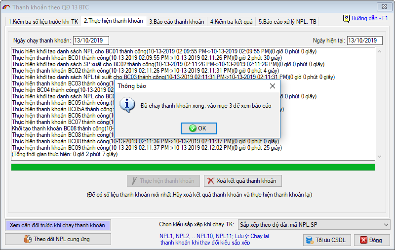
- Bước 3: In báo cáo thống kê
Sau khi chạy thanh khoản xong, bạn vào mục 3.Báo cáo thanh khoản để in các báo cáo xuất nhập tồn nguyên phụ liệu:
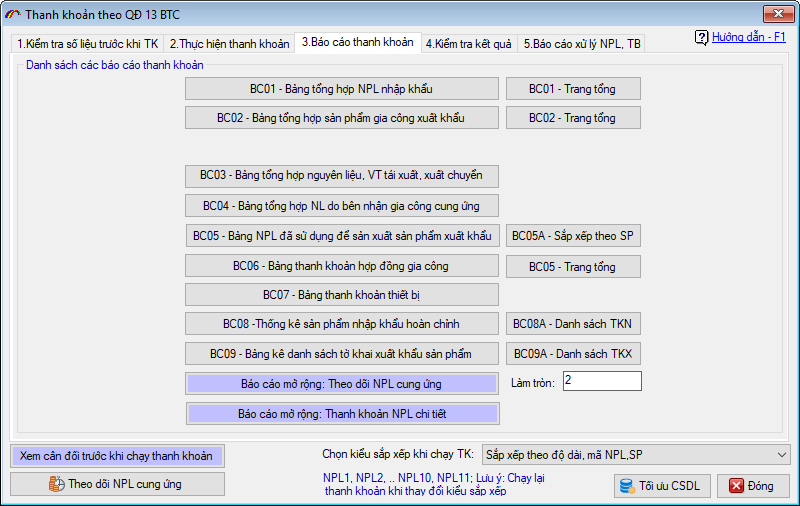
Mẫu “BC06 – Bảng thanh khoản hợp đồng gia công” là mẫu tổng hợp nhập xuất tồn nguyên vật liệu được dùng nhiều nhất. Ngoài ra, tùy thuộc vào yêu cầu quản lý của Doanh nghiệp bạn mà xuất các báo cáo khác cho phù hợp.
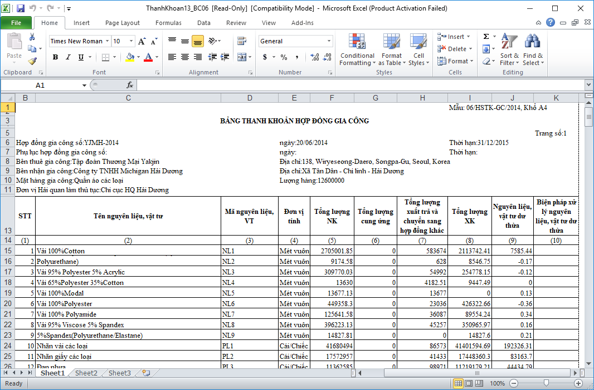
Mẫu BC06
Bên cạnh các mẫu báo cáo tổng hợp, phần mềm cũng cung cấp các mẫu báo cáo chi tiết của từng nguyên phụ liệu, giúp bạn kiểm tra được tình hình nhập xuất chi tiết của từng nguyên phụ liệu thuộc hợp đồng:
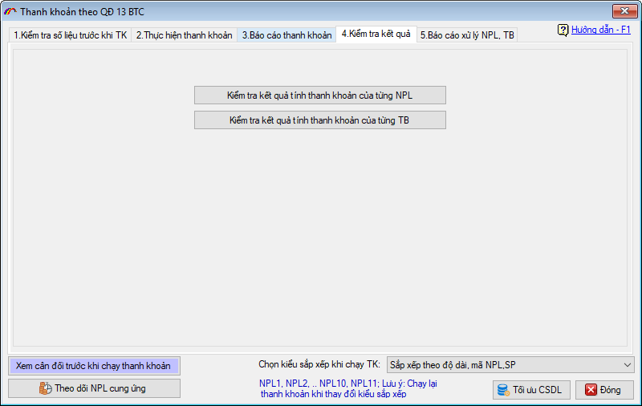
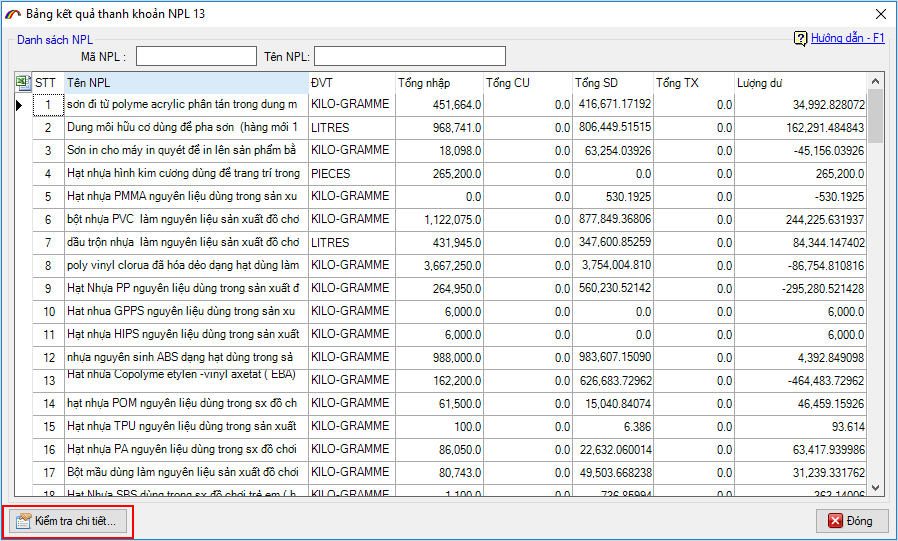
Theo quy định hiện tại đối với nguyên phụ liệu, máy móc thiết bị dư thừa sau khi kết thúc hợp đồng gia công thì “Chậm nhất 30 ngày kể từ ngày hợp đồng gia công kết thúc hoặc hết hiệu lực thực hiện, tổ chức, cá nhân phải hoàn thành việc thực hiện các thủ tục giải quyết nguyên liệu, vật tư dư thừa, phế liệu, phế phẩm, máy móc, thiết bị thuê, mượn và sản phẩm gia công”. Phần mềm cung cấp các mẫu báo cáo thích hợp với từng phương án mà Doanh nghiệp lựa chọn để giải quyết:
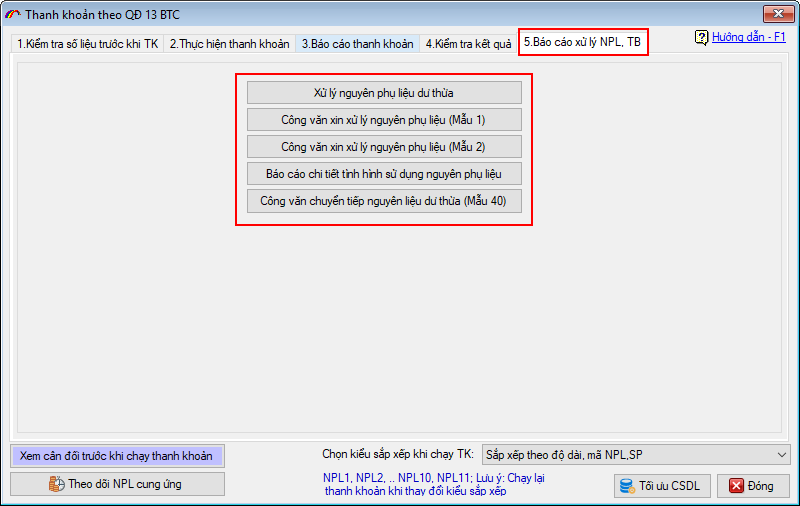